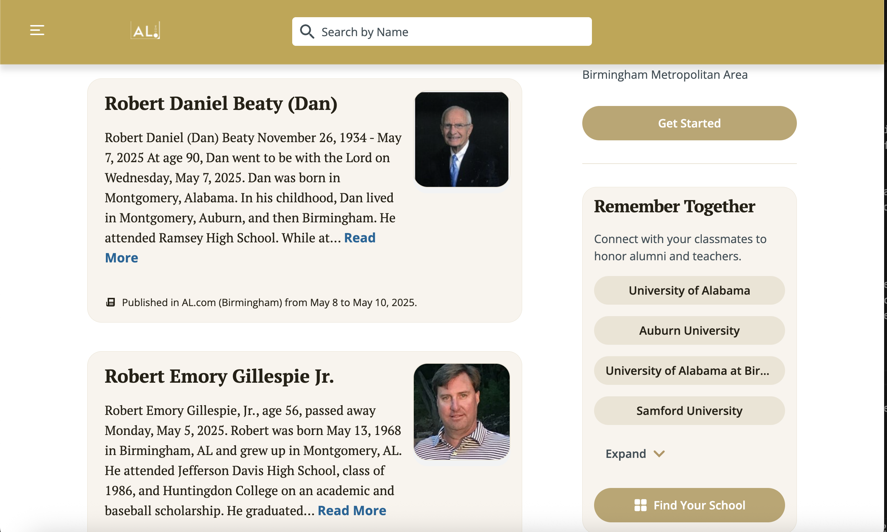

AL.com: A newsroom guide to using AI
Introduction
AL.com is a statewide newspaper based in Birmingham, Alabama. Formerly known as The Birmingham News in both print and digital format, the publicaiton acquired several local outlets including in Huntsville and Mobile before merging together in AL.com, a digital only format. AL.com is owned by Advance Local, a parent company which also includes The Oregonian, Mass Live, NJ.com and Cleveland.com among other outlets. I, Matt Cohen, the writer of this guide, was formely a reporter at AL.com from August 2023-June 2024. Over that academic year, I covered Auburn University athletics as one of two beat writers. During my time at the publication, I saw both the strengths and pitfalls of a fully digital approach.
Digital and online news provides a completely cusotmizable platform – at least within the framework of AL.com's/Advance Local's CMS. We can easily blend text and multimedia including photos, videos, graphics and web accessibility. It provides instant ability to publish content and ability to distribute via the website itself or social media.
But digital news also means a constant necessity to be putting out content, even the incredibly small and mundane. The philosophy of the news organization is clearly centered on driving page views and winning Google search algorithms. It means aggregation, aggregation and more aggregation. It means essentially flooding the zone with news. AL.com is a statewide news organization but its audience goals stretch beyond Alabama. AL.com picks up national news, but has trending writers to write the stories natively instead of using a wire.
In other words, there are talented reporters not being utilized to their best ability. Digital news provides a wide open lane for artificial intelligence (AI) assistance. There is no need to waste reporter's time on remedial tasks when they can be focusing on more important or interesting stories that will draw traffic themselves because of the reporting quality. There are time-saving and organziational tasks AI can complete for us to ease the load that comes with a massive and constantly updating website — often with inconsistent structure.
This guide will argue for and explain the utility of using AI for three tasks: Organizing and parsing photo galleries, garnering key information to make content like obits more accessible and, maybe more controversially, drafting low-hanging fruit content.
To test some of these tasks, I created a custom model using ChatGPT's ability to create a custom GPT. In that GPT, I gave directions for the exact type of tasks that will be examined in this guide. I also provided the GPT with several exmaples of extremely basic, bottom-level AL.com content as well as several images. These instructions and uploads give the model the exact world and knowledge it will refernce to ideally better complete the tasks. The applicability here is, when the funds exist for such a project, the benefits of an internal AI model that is trained on the exact tasks and specific niches that the publication would need. That would lead to better results.
Let's begin:
Using AI to improve photo gallery searching
AI is very skilled at parsing images. So how can we use this in the newsroom?
AL.com has a large photo gallery with tens if not hundreds of thousands of images dating back decades that have been uploaded into its CMS. But searching them is difficult. The built-in search function requires typing in something that will trigger the metadata of a photo or, in other words, a term that matches the caption or title of the image. But what if you wanted a certain type of image, or couldn't remember the specific details of what you wanted? AI solves that problem.
AI is able to look at the actual contents of images and make judgements based on that. In the examples below, we will see the steps of using AI to search for photos. We searched by the rudimentary details of what can actually be seen in the photo. This tests the large language model's (LLM) skill in recognizing what is actually visually present. With time and integration, these technologies could be added to the CMS itself combined with reporters learning how to properly prompt AI to decipher the types of images they are looking for. Let's look at some examples.
The initial prompt here is fairly simple. First we provide the guardrail that the model must stay within the boundaries of the photos it has in the gallery we uploaded to it (this specificity matters a lot) and from that, it must find an image of an empty arena.
But we must pay attention to the result we are getting and be prepared for inaccuracy. The custom GPT with uploaded images struggled consistently to return the correct photo. Here, the GPT was asked to return an image of an empty arena. It gave back a photo of a football stadium — i.e. not an arena — that very much had people in it.
Instead, we go to Gemini here. Gemini, Google's AI model, has been trained on images because of its integration with Google products like Google Images and YouTube. It will find much more success in parsing through images. This serves as a reminder that not every LLM is the best at each individual task. We can tailor our own use of AI to make life simple: pick the platform that works best for what we need. Gemini doesn't allow us to create our own custom GPT the way OpenAI's product allows. For the sake of this test, we have given Gemini the images via a prompt to begin the conversation. The prompt explains to Gemini that it is going to be working at a newspaper parsing through photos without metadata in order to find the best image for a certain request. It is a very similar instruction to what was given to the custom GPT within its custom instructions. This actual test may not be as applicable given Gemini's platform and the lack of an API key to plug directly into AL.com's interface, but use this test as an example for which to extrapolate possible uses natively on the AL.com CMS pages.
First, Gemini was given a group of photos — the same photos given to the custom GPT — and the carefully written prompt told Gemini exactly the role it was suppsoed to take as well as assigning a tag to each photo in the order it appears. Gemini would then return the necessary photo by stating which number it is to a given search prompt. Here, Gemini is given the exact same photos that the custom GPT was given as well as the exact same promopt: "Using your photo gallery, find me an image of an empty arena".
The winner between ChatGPT and Gemini was pretty obvious...
Gemini correctly identified Photo 9 as an image of an empty arena. That is a simple task. Where this could be even more helpful in a newsroom more realistically is helping find a photo that fits a certain story.
I asked Gemini to pick a photo that would be good to go with a story about a scandal in the football program. Gemini picked Photo 8, which is a photo of Auburn baketball coach Bruce Pearl at a press conference. That isn't exactly right of course because it is a basketball coach, but that wasn't the information Gemini was trained on here. What Gemini sees isn't necessarily the coach's face, but instead how he looks in that image, looking down, as Gemini notes. Gemini also points out the photo is of a press conferene, which is often where a serious story would be discussed.
Gemini wasn't given a better option for such a story than this photo and its reason for picking it was sound. Using AI in this manner could save us significant time and take advantage of the vast photo gallery at our disposal that is rarely actually taken advantage of.
Why is this important?
It's important we use the resources provided to us. Except that our existing technology doesn't always allow for that. The best use of AI is not necessarily as a replacement for Google search functions or adjacent tasks. Perplexity is an example of an AI model built more so to tackle Google search and research related tasks. But where Perplexity — and clearly also OpenAI products — struggles is when it is asked to do tasks that aren't exactly in its comfort zone. It would be highly unlikely for Perplexity to complete the tasks we have attempted here.
The lesson here is that we understand not every AI model is the same. There are things ChatGPT is great at that Gemini and Claude aren't. Or any other combination of that sentence. When integrating AI into our website and into our work, we must be careful that we are either using the correct existing model for the task that we want to complete, or build an entirely internal AI model that is trained on exactly what we want it to complete. We've exercised that judgement here.
Combining assurances that we use software in the way that specific way it was meant for as well as finding more ease and utility in accessing and taking advantage of large databases is a clear role for AI in our newsroom. It is small and is not facing the reader directly at all to quell general fears about the technology.
But there are some uses for AI that are significantly closer to the eyes of the readers...
Using AI to parse out key details for databases
Another one of AI's best skills is being able to parse out information from one context and recast it into another context. In a more journalistic sense, that could mean the LLM can read through a piece of text — just as we used it for images above — and find the key details whether that be what the model determines itself are the key details or what we tell it to look for. It can that extract out and display it in the way we define. That is a simple and effective way to use AI to create a database. And that has a lot of utility within AL.com's own content.
Obituaries are among the most important section of the newspapepr while also being arguably the most sensitive. Can we use AI to make that more accessible and user-friendly?
Below is the live webpage for the AL.com obituaries section. It breaks up the obits into three main metro areas that AL.com covers: Birmingham, Mobile and Huntsville. For the sake of this test, we entered the Birmingham section.
Inside the Birmingham section is a long, scrollable list of cards for various obituraries ordered by the date of death. But this really is not a great format. The text shown in each box is just a preview of the first few sentences of the obit. There would be much better ways we could parse out that information.
Here, we prompt the model to give us a database of the key facts in obituaries. I created a new custom GPT for this specifically because it was important for me to ensure as much accuracy as possible. Obviously the goal of a newspaper is always to maintain accuracy, but that is especially so with obituaries. There could be no distractions for this specific AI model. The only thing this model knows and is instructed to do is handle obituaries with serious care for accuracy and correctness. The only information uploaded to this GPT is the full text of 10 recent obits on AL.com as well as a screenshot of what the obit cards look like. The model is only allowed to pull information specifically from those 10 obits.
Here, we must prompt the model to look through the information it has been provided and only the information it has been provided to grab only the facts it has been instructed to find. In its instructions, the model is specifically told what the column headers will be and the information that goes in them. Those columns are last name, first name, date of death, date of birth, age, hometown and funeral service information. The model is instructed to not guess ever and to ensure accuracy. Here, I tell the model to complete the task following its instructions exactly. The resutls are spot on.
This is a good first step. This datatable correctly parses out the most important facts from the obits and puts it a more readable format. If a reader was looking for a specific death, they would have a far easier time finding it in this manner.
But we need more than that. While this is better, maybe a table isn't exactly what we want to display either. The card format AL.com already uses is a pretty good design element.
So we're going to keep the cards. But the whole idea of this was to parse out the more important information for the cards. The cards as they currently are on the website just contain a few sentences of the full obit article. That's not helful. So we must prompt the AI model to take the information it gave us in the table and reformat it into cards for each individual person. Again, we stress accuracy to the model.
Another good step. These aren't quite what the cards on the website look like though. These are certainly a step in the right direction because we now have an even better user-friendly approach that doesn't look as formulaic as a table.
But it still can be a lot better. AI is also really, really good at writing code. So here we can prompt AI to write some code. In theory our website would already be integrated to display the info we parsed out in the existing cards format so this step wouldn't be necessary. But we can display at least what that would like. The model was prompted here to look at the examples of cards it had been provided in its knowledge base and write HTML, CSS and JavaScript code to display the cards online in as similar a format to the existing styles as possible. Again, we stress to the model to ensure accuracy.
This code worked great. It created cards for the first two obits. The cards appear in a user-friendly format and display the correct information from the original table where the model parsed out the facts we wanted.
We have now successfully taken the existing model AL.com uses and simply scraped down the most pertinent facts and reformatted the contents of the existing cards as a result. Readers will find this significantly easier to use and makes the difficult process of mourning easier as the information readers need to know is more simply attained and streamlined.
I took this a few steps further on my own to showcase AI's skill in coding. I reached a final product formatting the cards further before I began to add JavaScript code to the existing cards. There is now a functioning search bar where users can ask for a hometown, a birth year, an age, a funeral service location or anything else from the key facts. Additionally, the JavaScript still includes the full text of the obit if the user did want to read it. All they need to do is click on the card, and the full text appears below.
The contnet is all exactly the same as the original AL.com page. Using AI, we simply reformatted it for the sake of accessibility. And to show AI's skill in coding, I did not have to write a single line of code manually to complete this task. All I needed to do was give the model specific refinements including specifically that I wanted the JavaScript to expand the boxes to showcase the whole text and then, using the knowledge base, paste in the full text from the provided obits. I also instructed the model to write specific CSS code so the fonts, shape, and style of the cards looked the way we intended.
Robert Daniel (Dan) Beaty
Date of Death: May 7, 2025
Date of Birth: November 26, 1934
Age: 90
Hometown: Birmingham, AL
Funeral Service: Dawson Memorial Baptist Church, May 19, 2025. Visitation at 10 a.m., service at 11 a.m.
Robert Emory Gillespie, Jr.
Date of Death: May 5, 2025
Date of Birth: May 13, 1968
Age: 56
Hometown: Birmingham, AL
Funeral Service: Canterbury United Methodist Church, May 13, 2025. Visitation at 1:30 p.m., service at 2:30 p.m.
Dr. Jack Walden Trigg, Jr.
Date of Death: May 7, 2025
Date of Birth: April 18, 1932
Age: 93
Hometown: Birmingham, AL
Funeral Service: St. Luke's Episcopal Church, May 16, 2025. Visitation at 10 a.m., service at 11 a.m.
Katherine Lyn Twilley
Date of Death: April 30, 2025
Date of Birth: Not provided
Age: 56
Hometown: Vestavia Hills, AL
Funeral Service: Vestavia Hills United Methodist Church chapel, May 20, 2025. Visitation 1-1:30 p.m., service at 1:30 p.m.
Harriet Adolphus Conyers
Date of Death: Not provided
Date of Birth: Not provided
Age: 86
Hometown: Vestavia Hills, AL
Funeral Service: Church of the Ascension, May 10, 2025, at 2 p.m. with interment and reception following.
Mamie C. Flynn
Date of Death: May 2, 2025
Date of Birth: Not provided
Age: 91
Hometown: Trussville, AL
Funeral Service: Ridout's Trussville Chapel, May 10, 2025. Visitation 10-11 a.m., service at 11 a.m.
Truman Nelson Robinson
Date of Death: May 2, 2025
Date of Birth: January 12, 1950
Age: 75
Hometown: Bessemer, AL
Funeral Service: Old St. Paul Baptist Church, May 9, 2025, at 2 p.m. Visitation 1-2 p.m.
Kathy Jean Courington
Date of Death: May 3, 2025
Date of Birth: April 27, 1957
Age: 68
Hometown: Birmingham, AL
Funeral Service: Church of the Highlands, May 8, 2025, at 6:30 p.m.; Walker Memory Gardens, Jasper, AL, May 10, 2025, at 2 p.m.
James "Jim" Payton
Date of Death: May 5, 2025
Date of Birth: Not provided
Age: Not provided
Hometown: Clanton, AL
Funeral Service: Martin Funeral Home Chapel, May 10, 2025, from 9:00 to 11:00 a.m.
Kathryn Rogers Ranelli
Date of Death: May 5, 2025
Date of Birth: April 21, 1948
Age: 77
Hometown: Birmingham, AL
Funeral Service: St. Mark the Evangelist Catholic Church, May 12, 2025. Visitation at 9 a.m., Funeral Mass at 10 a.m., luncheon to follow.
Grace Margaret "Punky" Brooks Eastwood
Date of Death: April 27, 2025
Date of Birth: February 14, 1932
Age: 93
Hometown: Mountain Brook, AL
Funeral Service: St. Luke's Episcopal Church, May 10, 2025. Visitation at 10 a.m., service at 11 a.m.
Why is this important?
Obituaries are maybe the most sensitive section of a newspaper. And they are often formatted horribly. Frankly, AL.com isn't too far off from a good format. But little things matter. We want users to be able to spend as little or as much time on this page as they desire and be able to get exactly what they need with as few steps. If someone is simply coming to look for funeral service information, that is now far more easily provided with fewer clicks.
AI allows us to entirely streamline this process because of its ability to parse out the information we need. Ideally, the internal model we would build for AL.com would constantly complete this task for every new obituary written so all future web cards follow the changes and format shift that we have shown here. It would be a larger AI task in the short term to convert all the existing web content into these cards, but that is attainable in time. It would be far easier to continue this cycle ongoing in the future.
One of the fundamental news principles is doing no harm. In this case, AI allows us to pursue that goal in how we display our content. The tasks are simple and with an internal model trained only on the available content, we make sure we have accuracy in the results as to ensure we are not doing any harm with mistakes while a family is grieving, either.
Using AI to draft low-hanging fruit content
Let's talk about something more controversial.
The idea of AI writing content is a bit scary in journalism, and understandbly so. The idea that we take the human out of the writing component does seem to imply first, the concept of losing journalism jobs and second, risks about accuracy. Again, both warranted. Let's address them both before getting into what this task will complete.
First, AI will not replace human journalist jobs. AI will simply aid us. We need a human to make sure we are inputting the right information into an AI model. We need a human to make sure the guardrails and scope we use with the AI model both meets journalistic as well as company standards. And we need a human to supervise, guide and train the model over time. There is never going to be a scenario where the model just roams free to do whatever it wants with no human guidance or supervision — guidance and supervision that will be very strict. AI will also never be let off the leash to actually report, but simply just write already reported information.
Second, while accuracy is a concern with the use of AI, through strong prompt writing and model training, we can work to limit that as much as possible. That also is further reason why a human must be involved in the process of using AI to draft content. The human will fact check the writing. The human will work to refine the draft through a series of prompting that pushes the model to give us the best, most accurate, most publishable story.
The key word in all of this is draft. AI will draft content. AI will not publish content. The writing completed by AI here is a draft that we can refine as writers. Yet that still speeds up the overall production process.
Now, where would we want to speed up the production process? That answer is quite simple. Especially in beat writing, there is a significant amount of low-hanging fruit stories that require very little brain power for a human to write but somehow continue to be extremely time consuming.
In my world, the sports desk, a significant chunk of the reporter's time can be spent writing some version of the following few stories: "Player X commits to School Y", "Player A planning to enter transfer portal, departing School B" or "What time is Team Z playing tonight? And on what TV channel? Here's how you watch."
I'd feel comfortable stating every single journalist is too talented to spend so much time writing those types of stories over and over again which require basically zero reporting. They are far more tedious than anything. There are so many better uses of our work day and so many better stories we could be pursuing. But low hanging fruit content always gets in the way.
Couldn't AI do that and save us a ton of time? It sure can.
So let's try that with an example of a transfer portal addition. I chose a real story: Auburn back up quarterback Holden Geriner putting his name in the transfer portal. We'll ignore specifics of dates for the purpose of this news hook beacuse by this point, Geriner has enrolled at Texas State. As far as the AI model knows for this test, this is a breaking news story on the day the test was conducted.
Here is the AL.com version of this story.
In our custom GPT, I created a prompt giving the main news, Geriner in the portal, as well as what I determined to be a few key pieces of context I wanted the model to ensure to include in its draft. The custom GPT does have access to some transfer portal articles that I uploaded to its knowledge base, but not one specifically about Geriner. So the prompt tells the GPT to use its uploaded writing exmaples in crafting this draft. The GPT was also provided with a screenshot of Geriner's stats throughout his college career.
Here's its first attempt.
This is decent. Certainly it follows the prompt and uses the content examples that have been uploaded into the GPT's knowledge base. The story largely follows that structure and does follow the model's instructions to write in a straighfoward manner in an inverted pyramid format while adhereing to AP style. We want these stories to be simple and eliminate some of the creativity of the LLM that can get us into trouble. This does that.
The GPT also added a few things that we didn't tell it to include, but that it found — correctly — on its own. The story notes that Jackson Arnold transfered to Auburn from Oklahoma and that Deuce Knight is an incoming freshman. Both true! I only included that those two were program additions but no more specifics than that. It also correctly identified Geriner's hometown as Savannah, Georgia.
But there are a few issues with it. And this is why it is important not to use AI as a replacement but still as a helper. In almost any story, there will need to be refinements that we make before publication. In this case, the GPT got the stats completely wrong even though we uploaded a screenshot. That's not okay. We need to ensure accuracy as the first priority. That is written into the GPT's instructions directly. But we also need to read the output to make sure we catch these errors. The next prompt tells the GPT to fix the stats mistakes and as well as add further context that I directed the model to include.
This is in part better. The context is better and provides good information about the quarterback room that the reader will care about.
But the stats are still wrong. So we puhsed the GPT again. The facts must be correct.
After prompting the GPT again, it got the stats correct. This time, as shown in the video, the GPT clearly searched the internet for resources that would have the correct stats and then cites those sources in the new version of the story.
Why is this important?
This article is pretty close to being publishable. The writer could now take this first draft and put it into the CMS and make any changes they want to at that point. It's entirely up to the reporter's opinion. No matter what, the human still has the final say here and the human will hit the publish button. But despite it taking a few steps to get the correct stats, we have a pretty good first draft and this only took a few minutes. If the reporter were to write this themselves and then edit the story themselves, the actual production time would be significantly increased.
The reporter normally writing these transfer stories or other basic news stories like this which don't include any quotes or deep reporting are still the beat writers. Obviously these stories fall under the umbrella of beat reporting, but using AI speeds up our production time. Faster in this case doesn't mean worse as long as we use the proper guardrails and remember the essential detail: AI is a helper, not a replacement.
By using AI to create our rough draft for publication with a few refinements, its possible 20-to-30 minutes have been chopped off the content production process. That's time the same reporter can spend making calls or writing a more deeply reported and important story. All the other outlets are going to write this same transfer story. This isn't the story AL.com needs to stand out above any other and creating an AI process to aid that is only beneficial, when done correctly. There are recruiting-focused websites which will devote more time to these stories. Where AL.com separates itself is in its enterprise, in-depth and analytical reporting.
So why not let our reporters focus on those stories more than this low hanging fruit?
Why not let AI work as our helper and not our replacement or enemy? In 2025, this is where journalism is heading. The uses can be debated. But as a news organization, failing to get on board and embrace new technology is only putting an hour glass on the organization as a whole.